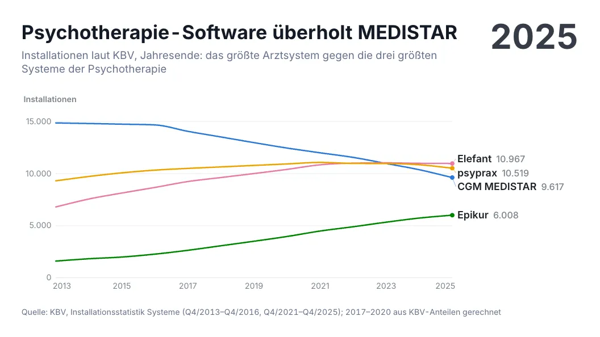
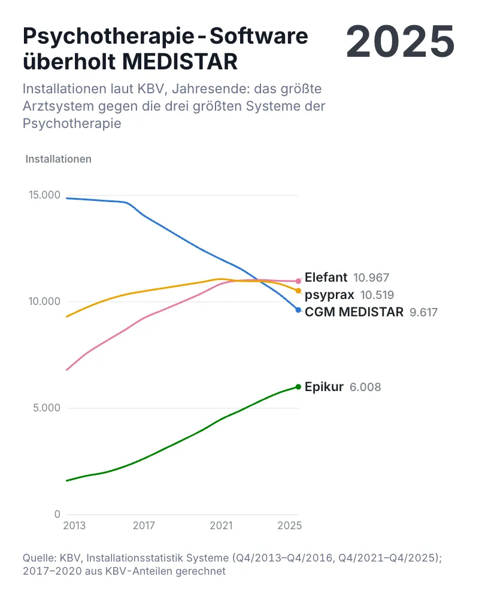

Psychotherapie-Software: Elefant vor MEDISTAR
Das meistinstallierte Praxisverwaltungssystem in der Statistik der Kassenärztlichen Bundesvereinigung (KBV) ist seit Ende 2023 Elefant, eine Software für psychotherapeutische Praxen: 10.967 Installationen Ende 2025, vor psyprax mit 10.519 und dem größten Arztsystem CGM MEDISTAR mit 9.617. Elefant, psyprax und Epikur laufen zu 97, 96 und 94 Prozent in psychotherapeutischen Praxen.


Das Wichtigste in Kürze
- Elefant überholte CGM MEDISTAR Ende 2023 mit 11.026 zu 10.966 Installationen. Ende 2024 lag auch psyprax vorn (10.845 zu 10.369).
- Seit 2013 wuchs Elefant um 61,4 Prozent, Epikur um 276,0 Prozent, psyprax um 13,1 Prozent; MEDISTAR verlor 35,3 Prozent.
- Die Arztgruppe Psychotherapeuten stellt inzwischen rund 30 Prozent aller Installationen in der KBV-Statistik, 2007 waren es 10,6 Prozent.
- Die Zahl der psychotherapeutischen Einzelpraxen stieg von 20.021 (2015) auf 29.577 (2025), die der ärztlichen Einzelpraxen sank von 62.524 auf 50.701.
Warum eine Psychotherapie-Software vorn liegt
Die KBV zählt Installationen, also Abrechnungen mit der Prüfnummer eines Systems. Psychologische Psychotherapeutinnen und -therapeuten arbeiten überwiegend in Einzelpraxen, Ende 2025 31.753 von 35.999 (88 Prozent), und jede Einzelpraxis zählt als eine Installation. Bei den Ärztinnen und Ärzten geht der Trend in die Gegenrichtung: in MVZ, wo viele Ärzte an einer Installation arbeiten. Mehr psychotherapeutische Praxen bedeuten deshalb mehr Installationen; über die Größe der Praxen sagt die Zahl nichts. Seit 2022 gibt es mehr psychotherapeutische als hausärztliche Einzelpraxen, seit 2023 auch mehr als fachärztliche (Bundesarztregister). Weitere Fallen der KBV-Statistik stehen in Wer zählt die Praxissoftware?
Der Markt der Psychotherapie ist eigenständig. Die drei größten Systeme dort gehören weder zu CompuGroup Medical noch zu medatixx: Elefant kommt von HASOMED aus Magdeburg, psyprax von der psyprax GmbH aus München, Epikur von Epikur Software aus Berlin. Dazu kommen SMARTY (4.982 Installationen) und PsychoDat (1.705).
Was die Zahl nicht sagt
- Installationen sind keine Praxen und kein Umsatz. Eine psychotherapeutische Einzelpraxis zählt wie ein MVZ mit 20 Ärztinnen und Ärzten.
- Die Zuordnung ist ein Anteil, keine Regel. Elefant, psyprax und Epikur haben 94 bis 97 Prozent ihrer Installationen in der Arztgruppe Psychotherapeuten, ein kleiner Teil läuft in ärztlichen Praxen.
- Die Größe der Arztgruppe ist für 2021 bis 2025 ein Mindestwert. Die KBV veröffentlicht für diese Jahre nur die 20 größten Systeme der Gruppe; die übrigen haben je höchstens 30 Installationen.
- 2017 bis 2020 sind gerechnet. Die KBV hat für diese Jahre nur Anteile in Prozent veröffentlicht.
Gerechnet
16 von 52 Werten der Grafik sind gerechnet, alle in den Jahren 2017 bis 2020: aus den KBV-Anteilen für Q3/2017 und Q3/2020 und einer linear gerechneten Gesamtzahl, die Jahresenden linear dazwischen. Die Zahl der psychotherapeutischen Einzelpraxen 2025 ist aus der Registerstatistik summiert. Methode je Wert in der Datenherkunft.
Quelle und Methode
Kassenärztliche Bundesvereinigung, Installationsstatistiken der Praxisverwaltungssysteme (Gesamtliste und Bericht je Arztgruppe), Jahresenden 2013 bis 2016 und 2021 bis 2025; Praxen nach Praxisform aus dem Bundesarztregister der KBV. Abgerufen am 20. bis 22. Oktober 2026. Wie sich der Markt der ärztlichen Systeme entwickelt, steht in Welche Praxissoftware Arztpraxen nutzen.
Häufige Fragen
Welche Praxissoftware nutzen Psychotherapeuten?
Am häufigsten Elefant (HASOMED) und psyprax, danach Epikur, SMARTY und PsychoDat. Ende 2025 hatten Elefant 10.967 und psyprax 10.519 Installationen in der KBV-Statistik.
Ist Elefant die meistgenutzte Praxissoftware in Deutschland?
Nach Installationen in der KBV-Statistik ja, seit Ende 2023. Unter den Systemen für ärztliche Praxen führt weiterhin CGM MEDISTAR mit 9.617 Installationen Ende 2025.
Warum zählen Psychotherapie-Praxen so stark?
Weil die KBV Installationen zählt und psychologische Psychotherapeutinnen und -therapeuten überwiegend in Einzelpraxen arbeiten (2025: 88 Prozent). Die Zahl der psychotherapeutischen Einzelpraxen wuchs zwischen 2015 und 2025 um rund die Hälfte.
Gibt es Praxissoftware für Psychotherapie auf dem Mac?
Laut KBV-Zulassungsverzeichnis läuft Epikur unter Windows, macOS und Linux; Elefant, psyprax und SMARTY sind nur für Windows zugelassen. Welche Betriebssysteme die übrigen Systeme haben, steht in Praxisverwaltungssysteme in Deutschland.